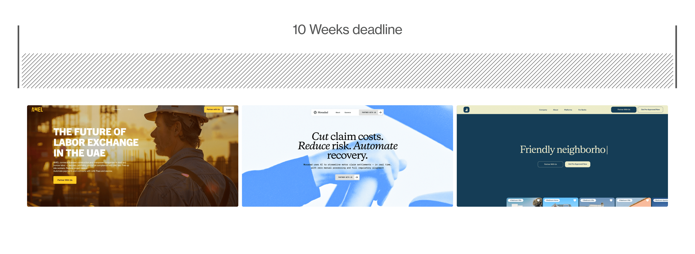
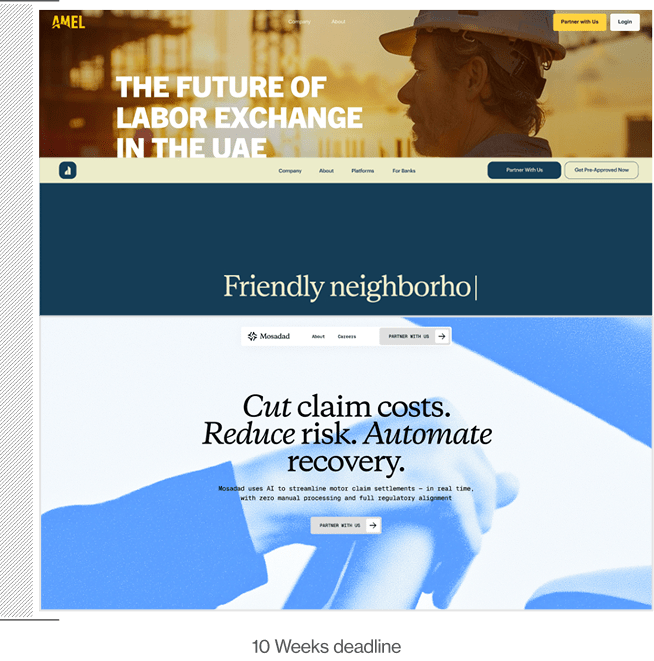

Systemized Branding
at Speed: 3 Sites in 10 Weeks


Following a previous collaboration with the client, we were invited to take on a significantly more ambitious challenge:
Build and launch three websites - including two full brand creations - in under 10 weeks.
Each website served a different purpose and a different audience:
- Amel an existing brand needing a structured uplift and a new website.
- Mossadad a new brand and website built from scratch.
- Dario a consumer-facing product requiring its own brand identity and a website with a more complex product flow.
The core question was:
How do you build multiple brands and multiple websites in parallel without sacrificing quality or coherence?
Development-First, System-Driven Thinking
From day one, we understood that the only way to achieve this scale and speed was to treat the three websites as a system, not as three separate projects.
Our methodology was built on three pillars:
- Development-First Planning
- Reuse components and structures
- Accelerate decisions
- Shorten the time between design and development handoff
- High-Intensity Collaboration & Weekly Decisions
- Lean Branding for Speed & Clarity
- Rapid research into audience, product value, and category
- A compact exploration phase
- Visual foundations aligned to the shared wireframe system
Before designing anything, we defined a shared wireframe architecture for all three websites. This allowed us to:
This system-first approach meant that every design decision was rooted in feasibility - enabling speed.
The compressed timeline required weekly decision cycles with the client.
No long iterations
No “we'll decide next week.
”No endless explorations.
This worked because the relationship was built on trust from previous collaboration - a crucial requirement for a process this fast and this agile.
For Mossadad and Dario we ran a lean, focused branding process, designed to create usable guidelines quickly:
The result:
Two full brand identities developed in record time, tightly connected to the website structure they would live in.
System Structure: Building Three Websites Together
Although each website had its own purpose, we intentionally engineered overlap:
Amel → Mossadad: High Overlap (≈50%)
Amel served as the reference point.
We uplifted the existing brand (logo, colors and concept), expanded it, and applied it to the shared
wireframe.
Once this visual language was established, Mossadad adopted the same section structure and component
logic - with its own visual skin.
Amel → Mossadad → Dario: Partial Overlap (≈20%)
Dario required a different approach due to:
- A B2B2C positioning
- Marketplace-style flows (inspired by Wolt/Airbnb)
- Heavy content cycles with the client's team
- Different functional requirements
Some sections were reused, but others required new interaction patterns and different visual density. Still, the shared system kept development efficient and unified.
Brand Development Highlights
This approach helped us to create 3 different websites with 3 brand identities based on the same infrastructure.
Amel
- Existing logo and minimal assets
- We expanded the brand into a full visual identity
- Introduced a clearer conceptual anchor
- Delivered a fully structured homepage and core pages
Mossadad
- Created a brand from zero
- Built a complete visual language based on the predefined website architecture
- Lean process, fast cycles, and immediate implementation into the templates
Darrio
- Built a distinct brand due to its consumer-facing nature
- Required adjustments to structure, hierarchy, and content
- Developed a flexible visual system that fit the shared components but still stood out as its own product
The Outcome
To make the process scalable, we:
- Created shared sections that were implemented across all sites
- Allowed designers to “skin” each site differently without breaking the structure
- Enabled developers to work continuously - as soon as one website's section was done, they could reuse it for the next
This resulted in:
- Faster production
- Fewer bugs
- Higher visual consistency
In 10 weeks we delivered:
3
Fully designed and developed websites
2.5
Brand identities (two from scratch, one uplift)
1
Shared system that reduced production time across all sites
This project proved that brands and websites don't have to be built sequentially. With the right system and the right collaboration - you can build multiple products together, faster, and with more coherence.
Next Case Studies

AppsFlyer
Brand Reposition Implementation - Building While Shipping

Amdocs
One Library to Rule Them All